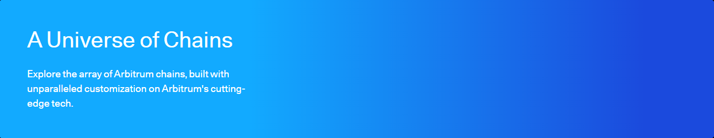

①
Verify token contract + listings
Contract address is the only identity. Cross-check on an Arbitrum explorer and reputable token listings.
This is a practical, security-first guide to Arbitrum DEX: how decentralized exchanges on Arbitrum work, how to choose venues and routes (direct pools vs routers vs aggregators), how to model real costs (gas + pool fee + slippage), how to check liquidity and token contracts, and how to troubleshoot the most common “bad price / swap failed / token not showing” problems.
Contract address is the only identity. Cross-check on an Arbitrum explorer and reputable token listings.
Thin liquidity causes huge price impact. If impact looks high, split trades or pick a deeper route.
Best net output depends on pool fee, hops, and slippage—not just the headline quote.
Confirm swap success and transfers via explorer, then revoke approvals you don’t need.
An Arbitrum DEX is a decentralized exchange running on Arbitrum where trades happen via smart contracts and liquidity pools. Unlike centralized exchanges, you keep custody of your wallet, but you also take on operational responsibility: token verification, approvals hygiene, slippage management, and explorer-first verification.
Lower transaction costs than Ethereum and deep DeFi liquidity for many pairs.
Wrong token contract, poor slippage settings, and unlimited approvals to unknown contracts.

“Best price” depends on how your trade is routed across pools. On Arbitrum DEX flows, you’ll usually encounter:
| Component | What it does | Why you care |
|---|---|---|
| DEX pool | Liquidity for a token pair | Depth affects price impact |
| Router | Selects a path across pools within one DEX | Can find better multi-hop routes |
| Aggregator | Compares across multiple DEXs/venues | Often best net execution, but verify approvals |
Trading on an Arbitrum DEX has multiple cost layers:
Token names and logos can be copied. Protect yourself by verifying:
Approvals grant spending permissions. They’re convenient—and dangerous if left unlimited.
Check status, token transfers, logs, and contract calls.
Open Arbiscan
Cross-check results if your UI is lagging.
Open Blockscout — Arbitrum
Unique, reputable references related to DEX mechanics, token verification, and security hygiene:
An Arbitrum DEX is a decentralized exchange on Arbitrum that trades via smart contracts and liquidity pools. You keep custody, but you must manage slippage, approvals, and token verification.
Arbitrum uses ETH for gas. Your total trading cost can also include pool fees and slippage/price impact.
Verify the token contract address on an explorer and cross-check it against reputable listings. Don’t trust token names/logos alone.
High impact usually means thin liquidity or large trade size relative to the pool. Split trades or route through deeper pairs.
Safer default is minimal approvals. Unlimited approvals increase risk if a contract is compromised later.
This is often UI/RPC caching. Trust the explorer, reconnect wallet, refresh token lists, or switch RPC providers.
Use an allowance tool like Revoke.cash while connected to Arbitrum and revoke approvals you no longer need.
Verify token contract → check liquidity → test small → verify on explorer → scale → revoke stale approvals.